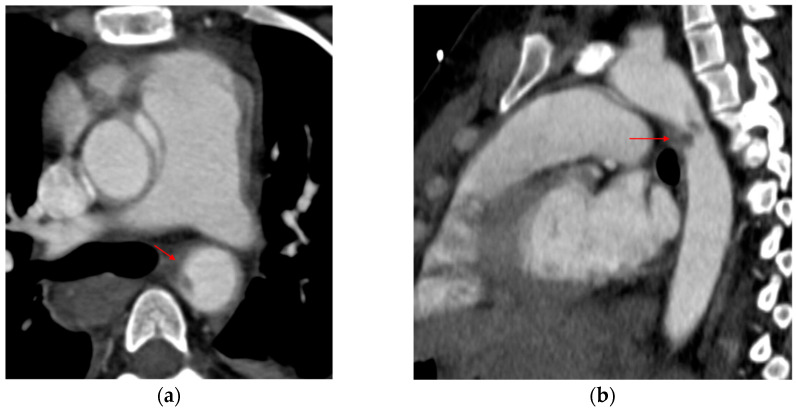

Ficha del catálogo
Hematoma intramural aórtico
- Sistema
- Cardiovascular
- Modalidad
- TC
- Región
- Tórax
- Dificultad
- Avanzado
Es una variante del síndrome aórtico agudo en la que se acumula sangre dentro de la capa media sin que exista un desgarro intimal visible ni una luz falsa con flujo. Clínicamente resulta indistinguible de la disección clásica, con dolor torácico o dorsal intenso y de inicio brusco. Puede resolverse, progresar a disección franca o evolucionar hacia un aneurisma localizado.
Técnica
La clave diagnóstica está en la serie sin contraste, donde la sangre reciente en la pared aparece hiperdensa respecto a la luz. La fase arterial confirma la ausencia de realce del engrosamiento parietal y descarta un colgajo. El estudio debe cubrir desde el cuello hasta las arterias femorales y conviene sincronizarlo con el electrocardiograma para evaluar bien la aorta ascendente.
Qué observar
- Engrosamiento parietal semilunar o concéntrico de distribución excéntrica
- Atenuación espontáneamente alta de la pared en la serie sin contraste
- Ausencia de realce del engrosamiento en la fase arterial
- Desplazamiento hacia el interior de las calcificaciones de la íntima
- Extensión longitudinal y afectación o no de la aorta ascendente
- Signos de inestabilidad como úlcera focal, derrame pleural o pericárdico
Hallazgos
Se identifica un anillo o una semiluna de engrosamiento mural que respeta la luz y mantiene un contorno interno liso. En la serie simple la pared muestra densidad claramente superior a la de la sangre circulante y en la fase con contraste no se opacifica. A diferencia de la disección, no hay colgajo móvil ni doble luz, y el grosor tiende a variar de manera gradual en sentido longitudinal.
Perlas
Sin la serie sin contraste el hematoma intramural pasa desapercibido con facilidad, porque en la fase arterial la pared engrosada se parece a un trombo mural o a una placa blanda; la adquisición simple dura segundos y es la que distingue una urgencia quirúrgica de un hallazgo crónico banal.
Diagnóstico diferencial
- Disección aórtica clásica
- Se observa un colgajo intimal y dos luces con realce, ambas opacificadas en distinto grado.
- Trombo mural sobre placa ateromatosa
- Es de menor densidad en la serie simple, tiene contorno interno irregular y se asocia a aorta dilatada.
- Aortitis
- El engrosamiento parietal es concéntrico, capta contraste y suele acompañarse de manifestaciones inflamatorias sistémicas.
- Artefacto de endurecimiento del haz junto a la vena cava
- Cambia con el plano y no reproduce una semiluna de densidad homogénea en la serie sin contraste.
Simuladores
- Trombo mural laminar en aorta ateromatosa
- Realce lento y heterogéneo por mezcla incompleta del contraste
- Grasa periaórtica infiltrada que aparenta engrosamiento parietal
Por modalidad
- TC
- Detecta la hiperdensidad parietal en la serie simple y define la extensión y las complicaciones.
- RM
- Caracteriza la antigüedad del sangrado por la señal de los productos de degradación de la hemoglobina en el seguimiento.
Protocolo
Serie torácica sin contraste con ventana estrecha seguida de angiotomografía sincronizada desde el cuello hasta las femorales. Se recomienda mantener el mismo protocolo en los controles para valorar el cambio de grosor. En el seguimiento se vigila la aparición de úlceras focales o de proyecciones de contraste hacia la pared.
Clasificación
Se aplica la misma clasificación de Stanford que en la disección, con tipo A cuando afecta a la aorta ascendente y tipo B cuando se limita a la aorta distal al origen de la subclavia izquierda. Se consideran signos de riesgo el grosor parietal elevado, el diámetro aórtico grande, el derrame asociado y la presencia de ulceraciones.
Errores frecuentes
- No realizar la serie sin contraste ante sospecha de síndrome aórtico agudo
- Interpretar el engrosamiento parietal como trombo crónico
- Usar ventanas anchas que ocultan la diferencia de densidad de la pared

síndrome aórtico agudo hematoma intramural aorta serie simple Stanford urgencia tomografía